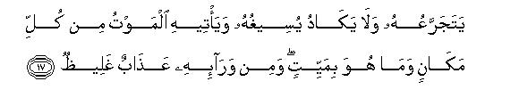

بسم الله الرحمن الرحيم
Sayyid Abul Ala Maududi - Tafhim al-Qur'an - The Meaning of the Qur'an
 14.
Surah Ibrahim (Abraham)
14.
Surah Ibrahim (Abraham)
The Surah takes its name from v. 35 in which mention has been made of Prophet Ibrahim (Abraham). But it does not mean that it contains the life story of Prophet Abraham. The name is merely a symbol lid the names of many other surahs, i.e., the Surah in which Abraham's mention has been made.
It appears from the tone of the Surah that it belongs to that group of the Surahs which were revealed during the last stage of the Makkan period. For instance, v. 13 ("The disbelievers warned their Messengers, 'you shall have to return to our community or we will assuredly expel you from our land'") clearly indicates that the persecution of the Muslims was at its worst at the time of the revelation of this Surah, and the people of Makkah were bent on expelling the Believers from there like the disbelievers of the former Prophets. That is why in v. 14 they have been warned, "We will destroy these evil doers," and the Believers have been comforted as were the believers before them, "and after them settle you in the land" Likewise the stern warning contained in the concluding portion (vv. 43-52 also confirms that the Surah relates to the last stage of the Makkan Period.)
This Surah is an admonition and a warning to the disbelievers who were rejecting the Message of the Holy Prophet and devising cunning schemes to defeat his Mission. But warning, reproof, censure and reproach dominate admonition. This is because a good deal of admonition had already been made in the preceding Surahs, but in spite of this their obduracy, enmity, antagonism, mischief, persecution etc. had rather increased.

In the name of Allah, the Compassionate, the Merciful.
[1-2] Alif Lam Ra. O Muhammad! This is a Book which We have sent down to you so that you may bring mankind by the help of their Lord out of the dark ways (of ignorance) into the Light (of knowledge) to the Way of that God,1 Who is All-Powerful and inherently worthy of All Praise2 and the Owner of whatever is in the heavens and the earth.
[3] And there is a painful torment for those who reject the Truth: who love the life of this world more than the life pf the Hereafter:3 who debar people from Allah's Way and want to make this Way crooked4 (to suit their wishes). They have gone far astray from the Way of Allah.
[4] Whenever We sent a Messenger to convey Our Message, he delivered it in the language of his people so that he may make it plain to them.5 Then Allah lets go astray whomsoever He wills and shows Guidance to whomsoever He desires.6 He is All-Powerful, All-Wise.7
[5] We sent Moses also before this with Our Signs: and We commanded him, "Bring your people out of all kinds of darkness into Light and admonish, them to learn lessons from the Divine History."8 There are great Signs9 in this for every steadfast and grateful person.10
[6-8] Recall (the time) when Moses said to his people, "Remember Allah's favor on you: He delivered you from Pharaoh's people who oppressed you with cruel afflictions: they slaughtered your sons and let your females live. In this there was a hard trial for you from your Lord. And remember also that your Lord forewarned, `If you be grateful11 I will increase My favors on you, and if you be ungrateful (you should know that) My chastisement is severe indeed'!"12 And Moses said, "If you prove thankless, you and all the dwellers of the earth know that Allah does not stand in need of any of you, for He is All Sufficient and worthy of all praise by Himself."13
[9] Has14 not the story reached you of those who have gone before you of the people of Noah and Ad and Thamud, and of those who came after them? Allah alone knows their number. When their Messengers came to them with plain teachings and manifest Signs, they thrust their hands into their mouths,15 saying, "We reject the Message with which you have been sent and we have a disquieting doubt about that thing16 to which you are inviting us."
[10-12] The Messengers said, "Do you have doubt about the existence of Allah. Who is the Creator of the heavens and the earth?17 He calls you that He may forgive you your sins and give you respite till your appointed term."18 They answered, "You are no more than human beings like ourselves.19 You intend to debar us from the worship of the deities whom our forefathers have been worshiping. Well, bring a clear Sign."20 The Messengers replied, "It is true that we are no more than human beings like you, but Allah shows His favor to anyone of His servants He pleases.21 And it is not in our power to bring any Sign for you. A Sign can come only by Allah's permission. And in Allah alone should the believers put their trust. And why should we not put our trust in Allah when He has guided us in the ways of our lives? We will bear with fortitude your persecutions of us and the trustful should have trust in Allah alone."

[13-17] At last the disbelievers said to their Messengers, "You shall either return to our religion22 or we will banish you from our land. " Then their Lord revealed to them, "We will destroy these evil-doers and after them settle you in the land.23 This is the reward of the one who dreads that he is accountable to Me and is afraid of the threat of My punishment." They had sought a judgment (and the judgment was passed on them) and every tyrant, the enemy of the Truth, suffered ignominy.24 Then after this Hell lies before him where he shall get tainted water to drink, which he shall try to gulp down, but will scarcely swallow it. Death shall surround him on all sides, yet he shall not die; and before him there shall be a grievous torment.
[18-20] The works of those who disbelieved may be likened, to the ashes which the wind scatters on a stormy day. They shall not be able to gain anything from what they did.25 This is the extreme deviation. Do you not see that Allah has based the creation of the heavens and the earth on truth?26 If He will, He can put you away and bring in a new creation in your place. And that is not at all a difficult thing for Allah.27
[21] And when those people shall all be exposed together before Allah,28 then those who were weak in this world will say to those who had posed as big ones."As we followed you in the world, can you now do anything to relieve us from the torment of Allah?" They will reply, "Had Allah guided us to the way of salvation, we would have certainly guided you to it. Now it is all the same whether we bewail it or bear it with patience: there is for us no way of escape."29

[22] And when Our judgment has been passed, Satan will say, “The fact is that the promises Allah had made with you. were all true. I, too, made some promises with you but I failed to keep any of them.”30
Yet I had no power over you; I did nothing but to invite you to my way and you accepted my invitation.31 So do not now blame me, but blame yourselves. I cannot help you here, nor can you help me. I dissociate myself from your making me a partner with God before this.32 Such wrong-doers are sure to receive a grievous torment."
[23-27] And (in contrast to the transgressors), those who have believed and done righteous deeds, shall be admitted to Gardens underneath which canals flow. They shall abide there for ever by the permission of their Lord, and they shall be welcomed there by "peace be on you."33 Do you not see to what Allah' has likened the Pure Word?34 It is like a good tree which has got deep roots into the earth and whose branches have spread high up into heaven.35 It bears good fruit every moment by the permission of its Lord.36 Allah cites these parables for the benefit of people so that they learn a lesson from them. And an evil word37 may be likened to an evil tree; which is torn out from the earth and has no stability.38 Allah makes the believers steadfast in the life of this world and of the Hereafter with the firm Word39 but lets the transgressors go astray.40 Allah has full power to do as He wills.
[28-30] You have seen those people who repaid the bounty of Allah with ingratitude and hurled their people (along with themselves) into the abode of perdition-Hell, wherein they shall enter and it is the most wretched abode to live! And they set up equals with Allah so that they should lead them astray from the way of Allah. Tell them, "Well, you may enjoy yourselves for a while for ultimately you shall have to return to the Fire of Hell."
[31] O Prophet! Tell My servants who have believed, to establish Salat, and expend openly and secretly (on good works) out of what We have given them41 before that Day comes when there shall be no buying and selling and no friendly help.42
[32-34] Allah is He43 Who has created the heavens and the earth, and He sent down rain water from the sky where with He produced different kinds of fruits to provide you with food. It is He Who subdued the ship for you that it may sail in the seas by His order and likewise He subdued the rivers for you. It is He Who subdued the sun and the' moon so that they should steadfastly pursue their courses and He subdued day and night for you.44 It is He Who fulfilled all your requirements;45 so much so that you cannot count His bounties, if you tried to number them. The fact is that man is very unjust and ungrateful.
[35-41] Recall the time, when Abraham prayed,46 saying, "Lord! make this city47 a city of peace, and protect me and my descendants from the worship of idols. Lord! these have turned away48 many people from the Right Way (and they might turn away my descendants as well. Therefore, only those of them) who follow my way, belong to me, but (I leave to Thee) those who follow a different way from mine, for Thou art very Forgiving and Merciful.49 Lord! I have settled some of my descendants in a barren valley near Thy Sacred House. Lord! I have done this in the hope that they would establish Salat there. So turn the hearts of the people towards them, and provide fruits for their food.50 It is expected that they will become grateful. Lord! Thou hast full knowledge of all that we hide and disclose."51 And52 the fact is that nothing in the earth and heavens is hidden from Allah. "All praise be to Allah Who has given me sons like Ismail and Isaac in my old age. Indeed, my Lord hears all prayers. Lord! help make me establish Salat and from among my descendants (raise those who should do this work). Lord! grant my prayer. Lord! forgive me and my parents and the believers on the Day when reckoning will take place."53
[42-46] Do not think that Allah is unaware of what these unjust people are doing; He is only deferring their case to the Day when all eyes shall stare with consternation. They shall be running in terror with heads uplifted and eyes fixed upwards54 and hearts becoming void. O Muhammad, fore-warn them of the Day when Our scourge will overtake them: then these wrong-doers will say, "Our Lord! give us a little more respite: we will respond to Thy Message and follow the Messengers." (But it will be said to them decisively,) "Are you not the same people who swore before this that you will never meet with a decline, whereas you had lived in the habitations of those who had wronged their souls and seen how We had dealt with them; and We held them up to you as examples? They had tried all their cunning devices to outwit Us but Allah had the remedy to counteract their devices, even though these were so powerful as to move mountains."55
[47-51] So, O Prophet. Never imagine that Allah will ever go against the promises made to His Messengers.56 Allah is All Powerful and capable of revenge. Warn them of the Day when the Earth and the Heavens shall be totally transformed,57 and all of them shall stand exposed before Allah, the One, the Almighty. On that Day you will see the criminals with their hands and feet in fetters. They shall be in garments of tar58 and the flames of fire shall be covering their faces. This will happen so that Allah may recompense everyone for what one earned: Allah is prompt at reckoning.
[52] This is a Message for mankind so that they may be warned by it and realize that in fact there is but One God, and that men of understanding may learn a lesson from it.
1This is the purpose for which the Holy Prophet had been sent. He was entrusted with the mission that he should bring mankind back from the ways of darkness (ways of wickedness) into the Way of God by the help of the Light of the Qur'an. For everyone, who is not on the Way of God, is, in fact, wandering about in the ways of the darkness (of ignorance), even though he might consider himself to be very enlightened and full of knowledge. On the other hand, the one who finds the Way of Allah, comes into the Light of Knowledge, even though he might be an illiterate person.
As regards "by the help of their Lord", this implies that the most a missionary of Islam (even though he be a Messenger of Allah) can do is to present the Right Way. It is not in his power to bring anyone forcibly to the Way, for this can only happen by the help and permission of Allah. That is why only that person whom Allah helps and permits gets guidance: otherwise even a perfect Missionary like a Messenger fails to bring a person to the Way. As regards the Divine Law, according to which Allah helps and permits a person to gain guidance, we learn from different passages of the Qur'an that Allah gives help only to that person who himself has a desire to get guidance: who frees himself from obduracy, obstinacy and prejudice: who is not a follower of his lust, nor a slave of his desires: who is inclined to see with open eyes) and hear with open cars and think with a clear mind, and is ready w accede to any reasonable thing.
2The word (Hamid) is more comprehensive than (Mahmud). A person will be entitled to be Mahmud only when he is praised. But the Being Who is Hamid, is naturally and permanently worthy of praise, whether anyone praises Him or not, because the element of praise is inherent in Him and is inseparable from Him.
3Those who reject the Truth are the people whose interests arc entirely bound with the life of this world, and who do not care at all for the interests of the life of the Hereafter: who are prepared to undergo any punishment in the Next World for the sake of the interests, pleasures and comforts of this world: who, on the other hand, cannot bear the sacrifice of even the smallest pleasure in this world, nor are ready to bear any loss or encounter danger or trouble in this world for the sake of the joys of the Next World. In short, such are the people who have coolly considered and weighed the pleasures of this world against the joys of the Next World, and decided in favor of this world: therefore, they readily sacrifice the interest. of the Next World whenever there is a clash between the two.
4That is, "They do not want to follow the Way of Allah, but endeavor that Allah's Way should follow their desires: it should adjust itself in such a way as to include all their conjectures, theories and whims as its part and parcel, and exclude every creed that does not suit their way of life: it should provide sanction for all their habits, customs and manners: it should not demand from them anything which they do not like: in short, the Way of Allah should be their obedient slave and turn in the direction their devilish lusts want it to turn: nay, it should neither criticize them nor ask them to follow Allah's injunctions. This is their condition for accepting the Guidance of Allah."
5This implies two things: First, Allah sent down His Message in the language of the people from among whom a Prophet was raised so that they might not have any excuse left that they could not understand the language of the Message. Secondly, this ruled out the presumption that a Messenger was ever given the Message in a different language merely for the sake of a miracle. For Allah considered it more important to make the people understand the Message and guide them rightly than to satisfy their curiosity. Obviously the purpose could best be served only if the Message was sent down to them in their own language by their Prophet and not in any other.
6That is, "Although the Messenger conveys the Message in the mother tongue of the people, which is understood by everyone of them, yet all of them are not guided aright. This happens because of the fact that all of those who understand a Message do not necessarily accept it. For it is entirely with Allah to show guidance by means of His Message to anyone He wills and to let go astray anyone in spite of it."
7As Allah is All-Powerful, no one is able by oneself to get guidance or to go astray, for none is completely independent but is under the power of Allah. But as He is All-Wise, He does not use His power blindly so as to show guidance to anyone He wills and to let go astray anyone He desires without rhyme or reason. In fact, the one who gets guidance from Him gets it on merit and the one who is let go astray is deprived of guidance because he himself deliberately chooses deviation.
8The Arabic word (ayyam) technically means memorable historical events. Therefore (Ayyam-u-Allah) (Divine History) implies all those eventful chapters of human history which mention the rewards and punishments that were meted out to the great personalities and nations according to their deeds in the past ages.
9Those historical events are Signs in this sense that their proper and intelligent study provides proofs of the fact that there is only one God: and that the Law of Retribution is universal and is based absolutely on the differentiation between the knowledge and moral practice of the Truth and falsehood: that this Law also requires another world (the Hereafter) for its due fulfillment. Moreover, these events contain Signs that serve as warnings against the evil consequences of building up systems of life on false creeds and theories, and help one to learn lessons from them.
10Though these Signs are always there, only those persons learn lessons from them who remain steadfast in trials and appreciate the blessings of Allah rightly and are grateful to Him. Obviously, frivolous and ungrateful persons cannot learn any lesson from these Signs, even though they might grasp their significance.
11That is, "If you are grateful, you will appreciate Our favors and make right use of them, and will not rebel against Our Commandments, but will surrender and submit to Us to show your gratitude to Us."
12Deuteronomy (Bible) contains a long and detailed discourse to this effect. According to it, Prophet Moses, on the eve of his death, reminded the Israelites of all important events from their history, and reiterated all the Divine Commandments of the Torah which Allah had sent to them through him. Then he told them in a long speech that if they obeyed their Lord, they would be given great rewards. But if they adopted the attitude of disobedience, they would get a terrible punishment. This discourse spreads over chapters 4, 6, 8, 10, 11 and 2830. Some of these passages arc so impressive and instructive that it will be worthwhile to quote a few of them:
"Hear, O Israel: The Lord our God is one Lord: And thou shalt love the Lord thy God with all thine heart, and with all thy soul, and with all thy might. And these words which I command thee this day, shall be in thine heart: And thou shalt teach them diligently unto thy children, and shalt talk of them when thou sittest in thine house, and when thou walkest by the way, and when thou liest down, and when thou risest up. . . . " (Deut. 6: 47)
"And now, Israel, what doth the Lord thy God require of thee, but to fear the Lord thy God, to walk in all his ways; and to love him, and to serve the Lord Thy God with all thy heart and with all thy soul, to keep the commandments of the Lord, and his statutes, which I command thee this day for thy good ? Behold, the heaven and the heaven of heavens is thy Lord's thy God, the earth also, with all that therein is." (Deut. 10: 12-14)
"And it shall come to pass, if thou shalt hearken diligently unto the voice of the Lord thy God, to observe and to do all his commandments which I command thee this day, that the Lord thy God will set thee on high above all nations of the earth: And all these blessings shall come on thee, and overtake thee, if thou shalt hearken unto the voice of the Lord thy God. Blessed shalt thou be in the city, and blessed shalt thou be in the field. The Lord shall cause thine enemies that rise up against thee to be smitten before thy face....The Lord shall command the blessing upon thee in thy storehouses, and in all that thou settest thine hand unto....The Lord shall establish thee an holy people unto himself....And all people of the earth shall see that thou art called by the name of the Lord; and they shall be afraid of thee....and thou shalt lend unto many nations, and thou shalt not borrow. And the Lord shall make thee the head, and not the tail; and thou shalt be above only, and thou shalt not be beneath...." (28: 1-13).
"But it shall come to pass, if thou wilt not hearken unto the voice of the Lord thy God, to observe to do all his commandments and his statutes which I command thee this day; that all those curses shall come upon thee, and overtake thee: Cursed shalt thou be in the city, and cursed shalt thou be in the field.. . . The Lord shall send upon thee cursing, vexation, and rebuke, in all that thou settest thine hand unto for to do. . . . The Lord shall make the pestilence cleave unto thee, . . . . And thy heaven that is over thy head shall be brass, and the earth that is under thee shall be iron....The Lord shall cause thee to be smitten before thine enemies: thou shalt go out one way against them, and flee seven ways before them :....Thou shalt betroth a wife, and another man shall lie with her: thou shalt build an house and thou shalt not dwell therein: thou shalt plant a vineyard, and shalt not gather the grapes thereof. Thine ox shall be slain before thine eyes....Therefore. shalt thou serve thine enemies which the Lord shall send against thee, in hunger, and in thirst, and in nakedness, and in want of all things: and he shall put a yoke of iron upon thy neck, until he have destroyed thee....And the Lord shall scatter thee among all people, from the one end of the earth even unto the other :...." (Deut: 28: 15-64).
13It should be noted that a reference to Prophet Moses and his people has been made here to warn the people of Makkah of the consequences of their ingratitude towards this favor of Allah that He had raised Prophet Muhammad (Allah's peace be upon him) from among them. This was a timely warning, for at that time they were showing ingratitude by rejecting that Message. They were, therefore, warned to learn a lesson from the miserable condition of the Israelites, which was the result of their ingratitude to and rebellion against Allah's favors.
As the Quraish themselves could see the consequences of that rebellious attitude of the Israelites, they were, so to say, asked this question: "Do you also desire to meet with the same consequences by showing ingratitude towards the Message. which is a great favor to you?"
Obviously, the great favor which was shown to the Quraish was that Muhammad (Allah's peace be upon him) was raised from among them with that Message about which he assured them over and over again: "Accept this Message of mine: all the Arabs and the non-Arabs will surrender and submit to you?"
14The speech of Prophet Moses ended with v. 8. From here begins a direct address to the disbelievers of Makkah.
15There has been a great deal of difference of opinion in regard to the meaning of the Arabic words of the Text and different commentators have assigned different meanings to them. But we arc of the opinion that these express merely the intolerance and perplexity and a bit of anger that was being shown by the disbelievers towards the Message and this is confirmed by the subsequent sentence.
16They had a "disquieting doubt" about the Message because it had taken away their peace of mind. This was because invitation to the Message always makes the minds uneasy, for it becomes hard even for its opponents to reject it out-right or oppose it with peace of mind. Howsoever they might give vent to their doubts about it and oppose it tooth and nail the force of its truth and its sound arguments, its frankness and candor and its winning manners of exposition produce a great agitation in the minds of its bitterest opponents: then the pure and spotless character of the Messenger and the marked change for the better brought about in his followers produce such an accumulative effect on their minds that even their most bitter antagonists begin to feel uneasy about their own stand. Thus, those who try to disturb the peace of mind of the upholders of the Truth are themselves deprived of their own peace of mind.
17The Messengers posed this question to those who rejected the Message in order to bring home to them the absurdity of their stand with regard to God. For though . the mushriks of every age believed in the existence of God and acknowledged that He was the Creator of the heavens and the earth, they did not accept the Message, its logical result, that He alone was entitled to their worship. That is why the Messengers. asked them, "Do you have any doubt about the existence of Allah?"
18In the case of individuals, the `appointed term' may be either the time of one's death or the Doomsday. As regards the `appointed term' for the rise and fall of communities, it is determined by their collective behavior. For instance, if a capable community degenerates before the expiry of its term, the assigned period is shortened and it is deposed. On the other hand, if a degenerate community changes its ways for the better, its term is extended, So much so that it may extend even to the Doomsday. This same thing is implied in v. 11 of Ar-R'ad:"...The fact is that Allah does not change a people's lot unless they themselves change their own characteristics."
19The disbelievers meant to imply: "You are a human being like us in every respect: you eat, drink and sleep like us and have wife and children like us. You feel hungry and thirsty, and suffer from heat and cold, disease and calamities like us. In short, you have every human limitation like us, and we see nothing unusual and extraordinary in you to induct us to accept you as a Prophet and believe that God communicates with you and sends His angels to you."
20That is, "If you still insist that you are a Prophet, bring a tangible proof of your appointment so as to convince us that you have really been sent by God and your Message is from Him."
21That is, "No doubt we are human beings like you but it is Allah's will that He has chosen us from among you and blessed us with the knowledge of the Truth and keen discernment. And this is Allah's will and He has full powers to bestow anything on anyone He wills. We are not in a position to ask Him to send that blessing to you or to anyone else: nor can we deny the realities which have been shown to us."
22It will be wrong to conclude from this demand of theirs that the Prophets professed the religion of their people before their appointment to the Divine Office. This only meant that their people thought so because before their appointment they led a quiet life and did not propagate a new religion nor refuted the religion in vogue at that time. That is why their people were under the wrong impression that the Prophets also professed the religion of their forefathers, and, therefore, accused them of apostasy. The fact, however, is that they had never followed the religion of their mushrik forefathers and were not guilty of apostasy.
23This was to reassure the Prophets that they should not worry at all about the threat that the disbelievers would banish them from their country, as if to say, "We will uproot them from their land, and establish you and your followers firmly in their place."
24In order to grasp the real significance of these historical events, it should be kept in view that these are being related here as answers to those objections which the disbelievers of Makkah raised before the Holy Prophet. As the conditions there at the time of the revelation of this Surah were exactly like those of the peoples of the former Prophets, they have been cited here to warn the Quraish along with the other mushriks of Arabia of the consequences,' as if to say, "The former disbelievers challenged their Messengers and were destroyed and the Believers were established in the land. Likewise your future also entirely depends on the attitude you adopt towards the Message of your Prophet. If you accept this, you will be allowed to remain in the land of Arabia, and if you reject it you shall be utterly uprooted from here." The subsequent events proved that this prophecy was literally fulfilled within fifteen years after this, for there remained not a single mushrik in the whole of Arabia.
25That is, "Those who were perfidious, faithless, and disobedient to the Divine Message, and refused to adopt that Way to which the Messengers invited, will find in the end that all the deeds and earnings of their lives were as worthless as a heap of ashes. Just as each and every particle of a high mound of ashes formed during a long course of years is scattered by the wind on a stormy day, likewise all their grand works will prove on the stormy Doomsday to be no more than a mound of ashes. Their dazzling culture, their grand civilization, their wonderful kingdoms and states, their magnificent universities, their sciences and their literatures, nay, even their hypocritical worship, and so-called virtuous deeds, their charitable and reformative works of which they were very proud in the worldly lift, shall prove to be as worthless as a heap of ashes, and will be scattered by the "Storm" of the Day of Resurrection. So much so that there shall not remain a single particle of their works worthy of being placed in the Divine scale on that Day in their favor.
26This is the proof of the preceding statement that the works of the disbelievers arc worthless like ashes. The question implies: "Why are you skeptical of this ? Do you not see that .the grand system of the earth and the heavens is based on the survival of Truth and not on the survival of falsehood. Everything bears witness to the fact that anything which is not based on truth and reality but rests on unreal speculation and guess-work cannot continue W live long. Therefore anyone who builds his works on the latter will most surely fail in his designs. For it is obvious that such a person builds his works on sand and should not, therefore, expect that they can last long. Likewise those who discard the truth and reality and build their works on false theories and presumptions should not expect at all that they can have any lasting value for they are bound to be scattered like worthless ashes. If this is obvious as it is, why should you cherish any doubts about the fact that anyone who builds the system of his life on the basis that he is independent of Allah or on the god-head of someone else (whereas there is no other God) shall inevitably find all his works to be worthless? When the fact is that man is not absolutely independent in this world nor is he the servant of anyone else than Allah, why should you not expect that anyone who builds his works on this falsehood, shall find that all his works were worthless like the heap of ashes that was scattered all over by the wind?"
27This is by way of admonition that follows immediately the proof of the statement in the preceding verse. This removes also any doubt that might arise concerning that decisive statement. One might question it like this: "If the creation is really based on the survival of truth, why is it that every follower of falsehood and every wrong-doer is not destroyed forthwith?" This is the answer: "O foolish man! Do you think that it is difficult for Allah to destroy such a person? Or, do you think that Allah does not destroy him because he has some close relationship with Him? If this is not so, and you yourself know that it is not so, you should understand it well that any community that follows falsehood and commits wicked deeds is always in danger of being removed to make room for a better community to work in its stead. If respite is given and the threat does not take a practical shape it does not mean that there is no danger at all. Instead of being neglectful, you should make use of every moment of this respite and realize that the false system which you arc following is not stable and durable. You should, therefore, build it on stable and durable foundations."
28The word (baruz) means `to emerge' and also implies `to become known'. That is why it has been translated into "shall be exposed before Allah", for it implies both these meanings. As a matter of fact, all the people are fully exposed all the time before Allah but they do not realize it. They will, however, realize it on the Day of Judgment when they shall be presented before the "Greatest of all Judges" that they were fully exposed before Him all along. So much so that every deed they did and each and everything they thought and desired is known to Him.
29This is to serve as a warning to all those people who follow others blindly or obey and submit to tyrants because they say, "We are weak." They are warned, as if to say "You should note it well that those leaders, saints, officers and rulers whom you arc following blindly today, will not be able to protect you at all from the chastisement of Allah. Therefore, you should consider it well today where such people, whom you are following or obeying, are themselves going and where they are leading you."
30When the criminals will charge Satan with leading them astray, he will plead guilty, as if to say, "You yourselves see now that all the promises and warnings made by Allah have come out true and all the promises which I made have proved to be false. I also confess that it was all deception that I gave you false assurances of prosperity, beguiled you by greed and enticed you in the snare of great expectations. I assured you that in the first instance there will be no life in the Hereafter, and that, if there be any you will go scot-free by the intercession of such and such a saint. The only thing you have to do is to make offerings before him: then you may do whatever you please, for he will deliver you from all the consequences. I repeat that I said all these things and asked my agents to say the same. "
31That is, "You cannot say and prove that it was I who forced you to follow the wrong way, whereas you wanted to follow the Right Way. You will yourselves admit that it is not so. I did no more than this that I invited you to falsehood in opposition to the invitation to the Truth and tempted you to vice instead of virtue. But I had no power to force you to the wrong way, if you desired to follow the Right Way. when you had the power and the option to follow either of the ways. Now I am ready to bear the burden of the wicked invitation I extended to you, but you are not justified in any way to throw on me the burden of accepting my invitation for you did it on your own responsibility. You should, therefore, yourselves bear all its consequences."
32This is a clear proof of shirk in practice, as apart from shirk in creed. As Satan will charge his followers with making him a partner with God, it is obvious that as far as creed is concerned there is no one who makes Satan a partner with God in His Godhead or His worship: nay, every one curses him for his evil ways. Nevertheless, people obey and submit to him and follow him blindly, as if he were their "god" and that is what has been termed shirk.
Let us now consider this thesis from the opposite point of view. Some one might say that this does not hold good, for this is based on a mere saying of Satan which has been cited here. First, this objection is not sound because Allah Himself would have refuted it, had it been baseless. Secondly, this is not the only instance of shirk in practice in the Qur'an. Here are a few more instances of this:
(a) It charges the Jews and Christians with shirk because they set up their priests and monks as their "Lords" besides Allah. (IX: 31).
(b) Those who follow the superstitious customs have been called mushriks. (VI: 136-139).
(c) Those who follow their lusts have been charged with making their "selves" their "god". (XXV: 43).
(d) Those who are disobedient to Allah have been accused of worshiping "Satan". (XXXVI: 60).
(e) Those who follow man-made laws without Allah's sanction have been reproved for setting up the makers of the laws without Allah's sanction as partners with God. (XLI: 21).
All the above instances are clear proofs of the fact that shirk is not confined to this creed alone that one might set up a partner with Allah in His Godhead as an article of faith. But it is also shirk that one should follow and surrender to some one other than Allah without any Divine sanction or in spite of a Divine prohibition. Such a one shall be guilty of shirk even though the follower might be at the same time cursing the one whom he follows and obeys. The only difference between the two kinds of shirk may be the extent of the crime and not its nature.
33The Arabic word (tahiyyah) is literally a "prayer for long life," but in usage it is a greeting at meeting. Therefore, the expression may mean: "they will welcome one another with 'peace be on you' or will be welcomed with these words" . It may also be noted that the word (salam) implies both a prayer for "peace" and a congratulation on it.
34Though the expression literally means "Pure Word," here it stands for "Truthful Saying and Righteous Creed". According to the Qur'an, this 'Saying' and 'Creed" are the acceptance of the doctrine of Tauhid, belief in Prophethood and Revelation, and in the lift of the Hereafter, for it declares these things to be the fundamental truths.
35This is to show the strength and extent of the "Pure Word". As the entire system of the universe hangs upon the Reality contained in this "Pure Word" which the believer Professes, the earth and its entire system co-operates with him and the heaven with its entire system welcomes him. There is, therefore, no conflict between him and the Law of nature, and everything in its very nature extends its help to him.
36That is, the "Pure Word" is so fruitful that every person (or community) who bases his system of life on it, gets benefit from it every moment for it helps to produce clearness in thought, balance in temperament, strength in character, purity in morals, firmness in conduct, righteousness in talk, straightforwardness in conversation, good temperament in social behavior, nobility in culture, justice and equity in economy, honesty in politics, nobility in war, sincerity in peace; confidence in promises and pledges. In short, it is the elixir that changes everything into gold if one makes the proper use of it.
37"Evil word" is the opposite of "Pure Word" It may be applied to everything that is unreal and wrong but here it stands for any false creed that one might adopt as a basis of one's system of life, irrespective of whether it be atheism or heresy or disbelief or shirk or idol-worship or any other "ism" that has not been brought by a Messenger.
38And "evil word" (false creed) has no stability because it is against the Law of nature. Therefore, everything in the universe opposes it and refutes it, as if the earth hates it and is ready to spit out its seeds every time they are sown in it, and if some need succeeds in growing an evil tree, heaven suppresses down its branches. In fact, false creed could never have been allowed to develop, if man had not been given the freedom of choice and respite for work for the sake of his trial. That is why when same foolish people exert to establish a system of life on it, it is allowed to grow to a certain extent, but it produces nothing but harmful results as long as it lasts. And no sooner does it encounter with adverse circumstances than it is thoroughly uprooted from the earth.
The distinction between the "Pure Word" and the "evil word" is so apparent that anyone who makes a critical study of the religious, moral, intellectual and cultural history of the world can perceive it easily. For the "Pure Word" has always been the one and same during the whole history of mankind and has never been uprooted. On the contrary, there have been innumerable "evil words" but each and every one has been so uprooted that there has remained hardly anything of it except its name in the pages of history. Nay, some of these had proved to be so absurd that if these are mentioned today one wonders how one could have followed such nonsensical things.
There has been another noteworthy difference between the two "words". Whenever and wherever the "Pure Word" has been adopted by an individual or a community, its blessings had not been confined to that individual and community but had benefited all around them. On the contrary, whenever and wherever an evil word has been adopted by an individual or a community, its evils had spread chaos and disorder all around them.
In this connection, it should also be noted that the parable of the "Pure Word" and the "evil word" explains the same theme that had been explained by the similitudes of the mound of ashes that is blown away by the "wind" of the stormy day (v. 18) and of the "foam of flood", and the "scum of the melted metals." (XIII: 17)
39That is, "The believers remain steadfast during the life of this world because of their stable system of life based on this "Pure Word" For this gives than a straight point of view, a sound system of thought and a comprehensive theory of life, and it serves as a master key to the unraveling of all knots and the solving of all problems. With its help, they acquire that strength of character and that firmness of conduct which keep them steady in the face of every vicissitude of life. This provides them also with such solid principles of life which give them peace of mind and heart, and prevent them from deviation and caprice. Above all, when, after the life of this world, they will enter into the life of the Hereafter, they will remain perfectly calm without any tinge of fear or anxiety, for they will find everything therein to be in accordance with their expectations, as if they were fully acquainted with every aspect of it before they entered into it. For they had been .fully informed of, and therefore fully prepared for every stage and phase of this life. That is why they will pass through every stage with perfect calmness and firmness in contrast to the disbelievers who built their worldly lives on an "evil word" and will, therefore, be taken aback to find everything against their expectations.
40That is, "Allah lets the transgressors, who discard the "Pure Word" and follow an "evil word", go astray by creating confusion in their minds and misdirecting their efforts because of this deviation. That is why they cannot find the right way of thought and action and so fail miserably."
41That is, "The believers should adopt an attitude of gratitude in contrast to the disbelievers (v. 29). The practical form their gratitude should take is that they should establish Salat and expend their wealth in the Way of Allah."
42That is, "On that Day none shall be able to rescue himself either by ransom or by intercession."
43That is, "It is the same Allah Whose bounties they are repaying with ingratitude and disobedience and with Whom they are setting up equals. though He has been so bountiful as to..."
44The words of the Text in vv. 32-33 have misled those people. who have translated these into "subjected to you" . So much so that some of them interpret these verses to mean that the chief aim of the life of man is to bring the earth and heavens under his subjection, whereas their real meaning is "subjected to (laws) for you". As a matter of fact Allah has subjected all these things to such laws as are beneficial for man. Had not a ship been subjected to certain physical laws, there could have been no navigation at all: had not a river been subjected to certain laws, it could not have been possible to take out canals from them; likewise if the heavenly bodies (the sun and the moon, etc.) and the earth and day and night had not been subjected to certain fixed laws, life could not have been possible, not to speak of civilized life!
45"He fulfilled all your requirements" : He has provided for everything that is required for your life, its development and evolution.
46In the preceding verses (32-35), an appeal was made to the Quraish to be grateful to that Allah Who has bestowed so many bounties on mankind in general. But in this passage the same appeal is being made on the plea that Allah had bestowed His special bounties on the Quraish in particular. They have been asked to remember that Prophet Abraham had settled their forefathers near the Ka'abah and made their city, Makkah, a "City of Peace" and Allah showered His blessings on the Quraish in answer to the prayer of Prophet Abraham. They have been admonished to remember those "bounties" and mend their ways.
47Makkah.
48This is a figurative way of saying that idols have been the means of turning many people away from Allah's Way into the ways of deviation.
49This forbearance shown towards those who followed a different way from the Right Way is an instance of Prophet Abraham's leniency to mankind. He left their case to the Forgiveness and Mercy of Allah for he could not bear to see them under Divine scourge. Another instance of this has been cited in Surah Hud. When the angels were on their way to destroy the wicked people of Lot, Prophet Abraham began to plead for them: "Abraham began to dispute with Us concerning the people of Lot for he was tender-hearted and merciful."(XI: 74-75) Likewise Prophet Jesus was so tender-hearted that even when Allah will show to him that his followers had deviated from the Right Way, he will plead their case: "Now if you punish them, they are your own servants, and if you forgive them, you are All- Mighty and All-Wise" (v: 118).
50Allah granted this prayer of Prophet Abraham. That was why people from the whole of ' Arabia used to come there for Haj and `Umrah at the time of the revelation of this Surah, and now people gather there from all over the world.
Besides this, there is plenty of food and fruit in all-seasons of the year, though the valley is absolutely barren and no vegetation grows in it even for animals.
51That is, "Lord: Thou hearest what I utter with my tongue and also hast full knowledge of my thoughts and feelings."
52This parenthetical clause has been inserted to confirm the statement of Prophet Abraham.
53Prophet Abraham included his mushrik father in his prayer because he had made promise that the would pray to his Lord for his forgiveness (XIX: 48). But afterwards when he realized that he should not pray for his forgiveness because he was an enemy of Allah, he absolved himself of that promise. (IX: 114).
54This graphic picture depicts the horrible plight of the wrongdoers on the Day of Reckoning. When they will realize the situation, they will be so taken aback that they will have their looks fixed straight in front of them without seeing anything.
55That is, "You have seen that the former people who violated the Divine Law, and who opposed the Message, devised very effective and cunning schemes to avert the consequences of their iniquity, but Allah defeated them with His single counter-device. You did not give up your crafty schemes against the Message of Truth in the vain hope that your "strong" measures would succeed where the schemes of your predecessors had failed.
56Though this has been addressed to the Holy Prophet, it is really meant for his opponents. They are being warned that they should not delude themselves because of the delay in their punishment. they should note it well that Allah fulfilled the promises He made to the former Messengers and defeated them opponents. Likewise He will surely fulfill the promises He had made to Muhammad (Allah's peace be upon him).
57It is obvious from this verse and some hints in the Qur'an that on the occasion of Resurrection, the Earth and the Heavens will not be totally destroyed but at the blowing of the "First Trumpet", the existing physical system shall be disarranged. After this, between the blowing of the "First" and the "Last Trumpet" (Allah alone knows how long this interval will last), the present form and aspect of the earth and the heavens shall be transformed and a new physical system with new physical laws will come into existence. That will be the world of the Hereafter. When the "Last Trumpet" will be blown, all human beings from Adam to those born before the "First Trumpet", shall be brought to life and appear before Allah. The Qur'an calls this (Hashr) which literally means "to muster and gather together". It appears from the wording of the Qur'an and some clear statements in the Traditions that this will take place on this Earth. The "Seat of Judgment" and the "Scales" will be established on the Earth and the decisions will be passed here. This is also clear from the Qur'an and the Traditions that the life in the Hereafter will not merely be a spiritual life but the very physical and spiritual life which we are living now on this earth; and every individual shall receive his reward or punishment exactly in that "personality" in which he or she is living in the life of this world.
58Some commentators and translators are of the opinion that stands for "sulphur" or "molten copper" but actually it stands for "tar" and the like.